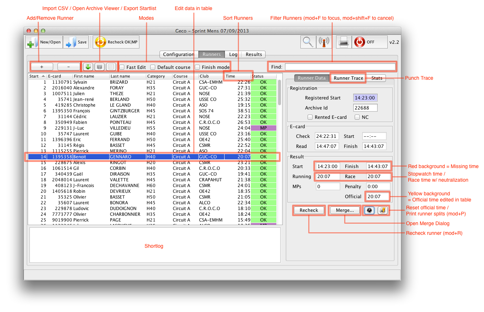
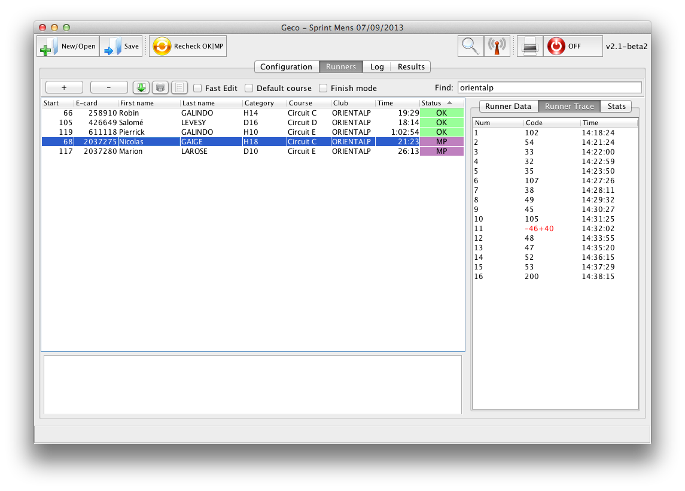

Runners Panel
The runners panel is the central place to register runners and manage events during the race.

(Click to zoom in)
The main part of the panel is the table, which lets you view/edit/filter/sort runners with all the essential data.
The right pane can display details about the currently selected runner (e-card data, trace), or statistics about the race.
Runners Table
- Add/Remove Runner: add a runner at the end of the startlist; remove the currently selected runner
- Import CSV / Open Archive Viewer: click to perform mass registrations
- Sort Runners: click on a header cell of the table to sort runners according to ascending/descending rank
- Filter Runners: start typing to display only entries matching your search (the search is performed full-text and matches substring in data)
- Fast edit Mode (tickbox): start edition with just one click - useful when lots of manual edition have to be done quickly
- Default course Mode (tickbox): when active, manually changing a runner’s category also sets his course to the default course for the category (if set in the stage panel)
- Finish Mode (tickbox): in this mode, Geco automatically focuses on the last data received from the card reader; runners are dynamically sorted by order of card reading, with most recent on top (other sort options disabled)
The different processes for registration of competitors are explained in the workflows section.
Manual edition of competitors
- Double-click in a cell to start edition
- Geco checks that the values you enter in the table are valid
- Information/problems are displayed in the status bar (and in the log for the most important ones)
- Use Default course Mode to change the course automatically with the category
- Changing the course triggers a status computation to check if the trace is still valid
- If necessary, the official race time (used for results) can be edited by hand
- If necessary, status can be changed manually
- Not Started (default status): runner registered but no race data available
- Running: runner known to have started but not yet arrived
- OK
- MP: Missing Punch
- DNS: Did Not Start
- DNF: Did Not Finish
- DSQ: Disqualified
- OOT: Out Of Time
- Unknown: unknown ecard read
- Duplicate: duplicate ecard read
Shortlog
The shortlog displays the last six events registered in the log. It is especially useful when reading e-cards as it displays the important data: e-card number, status, official time, but also problems detected (trace of missing punches, missing start time or finish time, unknown e-card…).
The shortlog displays e-card numbers as hyperlinks, so that clicking an hyperlink directly focuses on the table entry to let you check and solve problems.

(Table with a filter on the ‘litto’ string and focus on the Runner Trace pane)
Runner Data (mod+D)
The Runner Data pane shows complementary information about the currently selected runner. It is useful for an analysis of runner race when resolving a problem.
- Registration
- Registered Start: in case you allocate start times to competitors. Note that a start time in e-card always has priority over the registered start time
- Rented e-card: if ticked, Geco displays a warning message when reading this e-card
- E-card (information fields, non-editable)
- The Race field always displays finish - start time, not taking into account time penalties
- Start/Finish times are displayed with a red background if missing
- Result (information fields, non-editable)
- Official is the official time computed as race time + penalties
- The time taken by Geco to compute results is the one given in the table (which can be edited by hand if necessary) - Official time is displayed with a yellow background if it does not match with the table
- Buttons
- Recheck (mod+R) computes the status based on punches and course and reset the official time
- Reset Official Time computes the official time in table based on race time and penalties
- Print Runner Splits (mod+P) sends splits to the printer
- Click the Merge… button for advanced management of data, like merging two runners together. It opens the merge wizard on the currently selected runner.
Runner Trace (mod+T)
The Trace pane displays the list of controls for the course compared with the list of punches (control code and punch time) of the runner. It is of great help to understand where a runner mispunched. Geco uses a sophisticated algorithm to detect accurately mispunches, even in the case of butterfly loop:
- a missing control is displayed in red with a - sign in front
- a supplementary control is displayed in blue with a + sign in front
- in some cases, the control is displayed in red as -X+Y: this is a mispunch which can be explained as a substitution, the runner took control Y instead of X
- it is also easy to spot inversion with a sequence like -X, Y, +X: the runner took Y before X, while he should have go the other way.
Statistics Pane (mod+S)
See the Log page for a description of stage statistics.
{kind=link}
{kind=link}